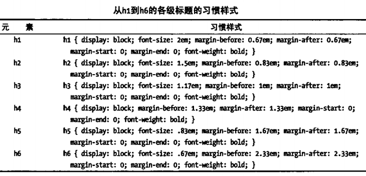

分隔主题和语义
1、添加基本标题h1-h6
从h1到h6的元素表示标题，h1级别最高 
hgroup元素可以用来将几个标题元素作为整体来处理，同一组中只有最高级别的的标题会被列入大纲，子标题会紧跟主标题下面而不会分隔太远造成混乱。(实际上并没有什么效果) 示例：
代码：
<hgroup>
<h3>王者荣耀2018KPL春季赛总决赛</h3>
<h4>是hero新人毕露锋芒还是EDG.M老队终将圆梦</h4>
</hgroup>
效果
3、生成节section
section元素，H5新增，表示文档的一节，通常包含一个或多个段落及一个标题，不过标题并不是必需的。习惯样式为块级元素，相当于一个有特殊语义的div。一个section元素可以嵌套在其他section中。4、添加首部和尾部header/footer
header和footer分别表示一节的首部和尾部，header通常包含标题、刊头或徽标，还可以包含该节的导航元素nav;footer通常包含该节的总结信息、作者介绍，版权信息、相关链接、徽标及免责声明等。这两个元素也是相当于有特殊语义的div。一节往往由header、section、footer三部分组成，但这不是一定的，可能会缺少某一部分。5、添加导航区域nav
nav{display:block;}，用于导航的一块区域。导航条一般使用ul制作。6、使用article
表示一段独立成片的内容，即可以独立于页面其余内容发布或使用。7、生成附注栏aside
aside元素用来表示跟周边内容稍沾一点边的内容，类似于书籍或杂志中的侧栏。包含一些背景信息、相关文章链接等。8、提供联系信息address
address{display:block;font-style:italic;},用于表示文档或article的联系信息。作为article的后代元素时提供该article的联系信息，否则提供整个文档的联系信息。不能用于表示文档或文章的联系信息之外的(邮箱)地址。9、生成详情区域details/summary
details元素在文档中生成一个区域，用于展开更多信息。局部属性：open，包含流内容及一个可有可无的summary元素。summary元素用于生成该区域的一个说明标签或标题。默认情况详情是关闭的，可以更改open属性改变默认打开情况。 示例： <details open> <summary>summary content</summary> details content </details>